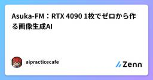
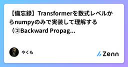

Zennの「ディープラーニング」のフィード
フィード

Asuka-FM：RTX 4090 1枚でゼロから作る画像生成AI
Zennの「ディープラーニング」のフィード
はじめに近年の生成AIのトレンドは、とにかくモデルパラメータをスケールさせ、Webから収集した数億〜数十億枚規模の超巨大データセットを流し込む「スケール至上主義」が主流です。しかし、モデルが数B〜十数B規模へと巨大化するにつれて、大学の研究室や個人が手を出せる領域からはどんどん遠ざかってしまいました。「潤沢な計算資源を持つ大企業ラボの公開モデルを待って、LoRAで微調整するしかないのか？」今回のプロジェクトはその考え方を覆すために始めました。個人でも自分の拡散モデルを作れる世界はそんなに遠くないかもしれません。「一般人がギリギリ手を出せるデスクトップGPU（RTX 4090 ...
2日前

【備忘録】Transformerを数式レベルからnumpyのみで実装して理解する（②Backward Propagation編）
Zennの「ディープラーニング」のフィード
はじめに前回の記事（①Forward Propagation編）では、Transformerの各部品をnumpyだけで実装し、Forward Propagationが最後まで通ることを確認しました。今回はその続きとして、各部品のBack Propagation（誤差逆伝播法）を実装し、損失から全てのパラメータまで勾配が流れることを確認していきます。実装している途中で、「こういう学習内容のまとめは、AIの普及であまり価値がなくなるのでは？」とも思いました。忘れたことはその都度AIに聞けば教えてくれますし、AIの方がその時点での完璧な答えをすぐに出してくれるからです。なので、時間をか...
2日前
Transformerをわざと過学習させて、原因と対策を数字で比べた
Zennの「ディープラーニング」のフィード
はじめにTransformer0-1 の5週目は、過学習を扱った。目標は「過学習の原因と診断の流れを、自分の数字を根拠に説明できるようになる」ことである。進め方は3段階にした。原因の違う過学習を、わざと起こす対策を1つずつ入れて、効き方を比べる条件を伏せた学習曲線を見て、何が起きているかを当てるモデルは W2 で作った文字レベルの小さな GPT(GPTMini)、データは tiny_shakespeare(文字の種類 65)である。リポジトリは https://github.com/miyamoto-gt/Transformer0-1 にある。 実験の設定 共...
3日前
Python機械学習の実践書4選
Zennの「ディープラーニング」のフィード
はじめに数年前、社内の在庫需要を予測するモデルを scikit-learn で組んだ。やったことは単純で、集めたテーブルを RandomForestRegressor に流し込み、交差検証のスコアが 0.9 を超えたので満足して本番に出した。結果、稼働初週で予測が実需から大きくずれた。原因は検証の切り方だった。時系列のデータをランダムにシャッフルして分割していたので、未来の情報が学習側に混ざっていた。スコアは最初から嘘をついていたわけだ。当時の自分はブログ記事とサンプルコードだけで組み立てていて、評価設計の基本が頭に入っていなかった。断片的な記事は、目の前のエラーを消すのには強...
6日前
ResNetの構造を基礎から整理する：畳み込み・残差接続・BatchNormの位置
Zennの「ディープラーニング」のフィード
ResNet（Residual Network）の構造を、畳み込みの重みの数え方から順に整理した記事です。残差接続でなぜ深いネットワークを学習できるのか、ブロックとネットワーク全体がどう組まれているのか、BatchNormをどこに置くのか、を扱います。大学の基礎的な数学（微分、行列）がわかれば読める範囲で書いています。 畳み込みの重みはいくつあるのかResNetの部品を見る前に、畳み込み（convolution）のフィルタに重みがいくつあり、どう計算されるのかを確認しておきます。ここが曖昧なままだと、後のbottleneckの計算量の議論が追いにくくなります。 1チャネルの場合...
8日前

2026年AI動画生成モデル徹底比較：Seedance・Sora・Kling・Hailuo・Wan2.1のROI
Zennの「ディープラーニング」のフィード
2026年AI動画生成モデル実用比較ベンチマーク：Seedance、Sora、Kling、Hailuo、Wan2.1の性能・計算資源・実質ROI対決AgDex 視覚計算・システム設計研究チーム 2026年10月20日 読了目安: 14分 ビジュアルコンピューティング・メディア設計エグゼクティブサマリー：デモの華やかさから計算コストの実用精算へ 2024年の投機的熱狂を経て、2026年後半の生成動画技術は「工業的自動化・ネイティブ音画同期・実質計...
9日前
RNNとは？順序データを扱う再帰型ニューラルネット
Zennの「ディープラーニング」のフィード
DS検定の学習で出てくる「RNN」。時系列や文章といった順序のあるデータを扱うニューラルネットワークの基本形として位置づけられる概念です。本記事では、RNNの仕組みと、関連するLSTMやTransformerとの違いを整理します。 RNNとはRNN（Recurrent Neural Network、再帰型ニューラルネットワーク）は、過去の出力を次の入力に再帰的に取り込むことで、順序のあるデータを扱えるようにしたニューラルネットワークです。通常のニューラルネットワークは、入力を一つ受け取って出力を返すだけで、「直前に何があったか」を記憶しません。RNNはネットワークの中にループ構造...
10日前
AstraがQwenを「外科手術」？重み0.016%の編集で何が変わったのか
Zennの「ディープラーニング」のフィード
AIが同じことをぐるぐる考えて、いつまでも答えを出してくれない。そんな経験はないでしょうか。この困った癖を、別のAIに直してもらう。しかも、プロンプトを工夫するのではなく、モデルの重みを直接書き換えてもらう。いわば、AIによるAIの「外科手術」です。2026年11月2日にMIT CSAILの研究者らが公開した「Sparks of Weight-Space Programming」では、そんな実験が紹介されています。[1]執刀役はOpenAIのGPT-6 Astra、対象は小型LLMのQwen3.5-0.8B。全体の約0.016%の重みを編集したところ、数学ベンチマークのMATH-5...
10日前
SigLIP2に匹敵する画像エンコーダーをフルスクラッチで開発した話
Zennの「ディープラーニング」のフィード
はじめにNoetraでは、フィジカルAIの実現に向けて、国産マルチモーダルLLMの開発を進めています。その基盤技術の一つとして、本記事では画像エンコーダーをフルスクラッチで構築した取り組みについて紹介します。近年、国内外の企業・研究機関でマルチモーダルLLMの開発が活発化しています。多くのモデルは、言語モデルを独自開発している一方で、画像エンコーダーにはSigLIP2に代表される、非公開データで学習された高性能なモデルを利用しています。しかし、そのデータや学習過程が分からないままでは、透明性や安全性に関する懸念が残ります。そこで我々のチームでは、自立した国産マルチモーダルLLM...
10日前
Kaggle RSNA 膝MRIコンペで銅メダル：やって良かったこと・やらなきゃ良かったこと
Zennの「ディープラーニング」のフィード
骨軟部（骨、筋、脂肪など）は、画像診断の中でも苦手意識を持つ人が多い分野だと思う。もし AI が読んでくれるなら、任せたいと思ってしまう（最後は人間が判断するんだけど）。この苦手意識は日本だけでなく、万国共通なのかな。そんなことに思いを馳せる RSNA のコンペが先日終了した。私のドメイン知識が活きる貴重なコンペだったが、結果は 623 位 / 6,299 チームで銅メダルだった。実は締め切り直後は 655 位で、メダル圏の外だった。5 日後に Kaggle が規約違反のチームを除外して順位を並べ直し、繰り上がって銅メダルになった。ぎりぎりである。コンペでの戦略の立て方や終盤での駆け...
13日前
AI効果とは？AIが上手になるほど『AI』と呼ばなくなる現象をわかりやすく解説
Zennの「ディープラーニング」のフィード
はじめにAI効果（AI Effect）は、コンピュータ科学者ダグラス・ハフスタッターが1985年に提唱した概念です。AIが何かの問題を解決すると、その解決策は「AI」ではなく「単なるコンピュータプログラム」と見なされるようになるという、AI評価の相対性を指摘する用語です。 定義AI効果：何らかの問題解決がコンピュータで実現されると、その技術は「AI」とは呼ばれなくなる傾向言い換えれば、「AIは一度実装されれば、もはやAIと呼ばれなくなる」AIの定義が移動する現象：「真のAI」は常に「まだ実現されていない能力」を指すハフスタッター自身の言葉："AI分野で何かが達...
14日前
【小学5年生でもわかる】AI効果ってなに？
Zennの「ディープラーニング」のフィード
AI効果とは、「コンピュータが何かができるようになると、人間はそれを『AI』と呼ばなくなってしまう」という現象です。例えば、昔、メールを自動で分類することはとても難しいと思われていました。だから、「スパムメールを自動判別するのはすごいAI技術だ！」と言われていました。でも今、メールの自動分類は当たり前になってしまいました。だから、もう誰も「これはAI技術だ」とは言いません。ただの機能になってしまったんです。つまり、AIが成功すればするほど、人間はそれを『AI』とは呼ばなくなってしまう。これが「AI効果」という現象なんです。!専門的な仕組みや関連技術を詳しく知りたい方はこちら👉...
14日前
エージェント（AI）とは？自律的に行動するAIをわかりやすく解説
Zennの「ディープラーニング」のフィード
はじめにエージェント（Agent）は、AI研究における重要な概念で、環境を認識し、自律的に意思決定し、行動を実行するシステムを指します。1990年代より計算機科学の中心的研究対象となっており、ロボット、ゲームAI、シミュレーションなど多様な応用があります。 定義エージェント：環境から入力（センサー信号）を受け取る入力に基づき推論・意思決定を行う環境に対して出力（行動）を実行するこの知覚-判断-行動ループを自律的に繰り返す特徴：自律性（Autonomy）：外部指示なしに行動反応性（Reactivity）：環境変化へ即座に応答目標指向性（Goal-Orien...
15日前
【小学5年生でもわかる】AIエージェントってなに？
Zennの「ディープラーニング」のフィード
エージェントとは、「自分で考えて、自分で行動するAI」という意味です。想像してみてください。ゲームの中で、NPCキャラクター（コンピュータが操作するキャラ）がいますね。人間プレイヤーから指示されなくても、「あ、敵が来た、逃げよう」とか「今のうちにお店で買い物しよう」とか、自分で判断して行動します。そういう「自分で判断して行動する仕組み」をエージェントと言うんです。人間が「ここへ行け」と指示するのではなく、エージェント自身が「今、何をすべきか」を考えて、行動する。そういうAIのことです。!専門的な仕組みや関連技術を詳しく知りたい方はこちら👉 エージェント（AI）とは？自律的に行...
15日前
I-JEPA 論文解説：画素の再構成から、意味のある表現の予測へ
Zennの「ディープラーニング」のフィード
1. はじめに画像の一部を隠し、残った部分から予測する。この学習問題は単純だが、「何を正解として予測させるか」によって、モデルに求める理解は変わる。たとえば、鳥の背中を隠した画像を考える。周囲から鳥の姿勢や身体のつながりを推測できても、羽毛の模様や光の反射まで一意に決められるとは限らない。画像認識に役立つ表現を得たいとき、それらすべての画素を当てることを、同じように要求する必要があるのだろうか。I-JEPA（Image-based Joint-Embedding Predictive Architecture）は、見えている領域から、隠れた領域の「画素」ではなく「表現」を予測す...
16日前
【備忘録】Transformerを数式レベルからnumpyのみで実装して理解する（①Forward Propagation編）
Zennの「ディープラーニング」のフィード
はじめに今回は自分の学習のために、Transformerを自分で実装してみました。頭の中を整理する＋後から思い出す用に記事として残そうと思って、こうして書くことにしました。!この記事のコードは、全てGitHubのリポジトリmatsu335/Transformer_Understandingで公開しています。記事①で使うコードはcode/フォルダ内の以下の3ファイルで、numpyだけで動きます。1_functions_forward.py：必要関数（Linear, Embedding, Multi-Head Attentionなど）1_architecture_forw...
16日前
AdaGrad・RMSProp・Adamを自分で書く：成分ごとのステップサイズで、標準化していないデータを解く
Zennの「ディープラーニング」のフィード
はじめに『分析者のための数理最適化入門』（伊藤元治・原田耕平・松岡勇気、ソシム、2026年）の第4章を、5本に分けて記事にしています。この記事は5本目で、PyTorchなどにも用意されているAdaGrad・RMSProp・Adamを扱います。確率的勾配降下法（SGD）は、すべての変数に同じステップサイズ \alpha を使います。変数ごとに勾配の大きさが大きく違うと、一番大きい勾配に合わせて \alpha を小さくするしかなく、ほかの変数がほとんど動かなくなります。AdaGrad・RMSProp・Adamは、勾配の大きさで割ることで、変数ごとの大きさの違いを打ち消す方法です。本...
16日前
RSNA2026-参加記録（🥈100位）
Zennの「ディープラーニング」のフィード
はじめにデータアナリティクスラボ株式会社データソリューション事業部の森岡です。当社はラボチームという組織を有し、最新技術の検証や、専門分野の知識を生かしたソリューション開発に取り組んでいます。今回は医療現場での業務経験をもつ医療チームのメンバーと、技術チームのメンバーでチームを組み、Kaggleの RSNA Knee Abnormality Detection に参加しました。本コンペでは、医療の知識を活かした解法で金メダルを獲得することを目標に取り組みました。そのため、公開されている事前学習済みのCNNやLLMを活用しながら、ラベル作成、前処理、CNNの追加学習を行い、分類の...
17日前
機械学習の数式に強くなる定番書4選
Zennの「ディープラーニング」のフィード
はじめに自分が機械学習を初めて触ったとき、やっていたことは fit と predict を呼ぶだけだった。チュートリアルをなぞれば精度は出る。それで仕事になっている気になっていた。崩れたのは、本番データで精度が落ちた理由を聞かれた時だ。説明できなかった。特徴量を足したり木の深さを変えたりして数字は動くのに、なぜ動いたのかを言葉にできない。手順は覚えたが、手法の中身は空っぽだった。そこから、ブログ記事を読む時間を減らして分厚い本に振り替えた。遠回りに見えて、これが一番効いた。学習曲線の形を見て次の手が浮かぶようになったのは、ハイパーパラメータの一覧表を覚えたからではない。誤差がど...
23日前
Python機械学習の実践書4選
Zennの「ディープラーニング」のフィード
はじめに数年前、初めて一人で任された分析案件のことをよく覚えている。pandas でCSVを読み込み、適当にモデルを回し、交差検証のスコアが良かったのでそのまま報告した。本番データに差し替えた途端、精度は半分近くまで落ちた。原因は前処理のリークと、そもそも評価設計の雑さだった。このとき痛感したのは、知識の量よりも学ぶ順番だった。自分は機械学習のアルゴリズムの名前はいくつも言えたのに、生データを扱う足腰と、モデルを検証する作法がすっぽり抜けていた。ライブラリのAPIリファレンスを読んでも、その穴は埋まらない。そこから意識を変えて、手を動かしながら読める本を選ぶようにした。理論の名...
25日前